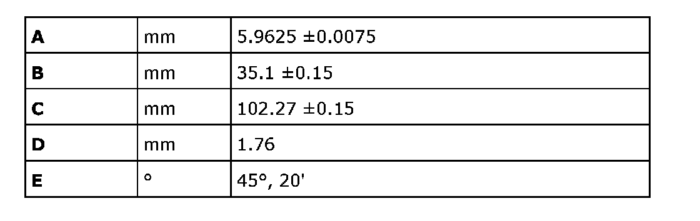
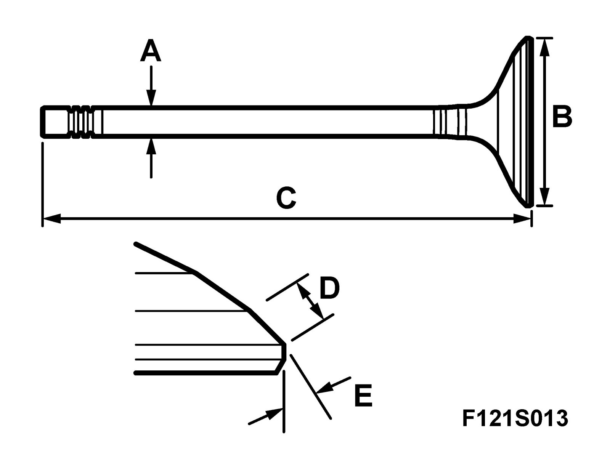
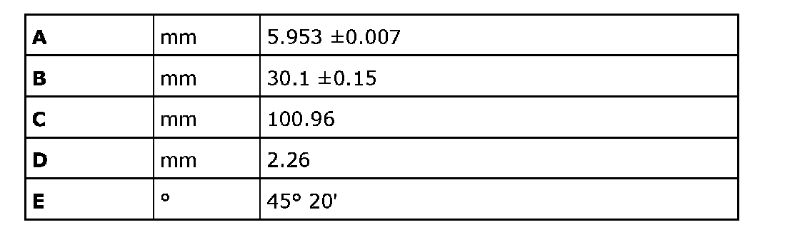
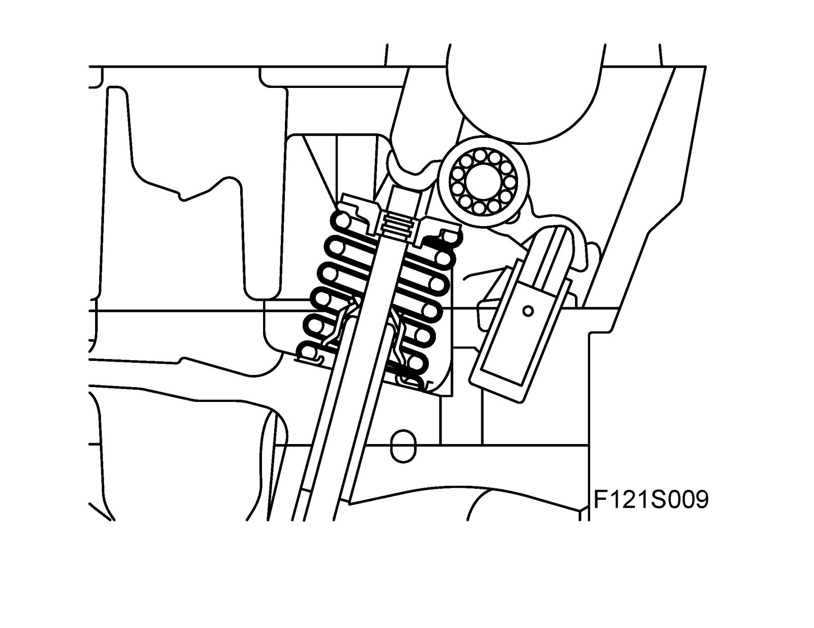
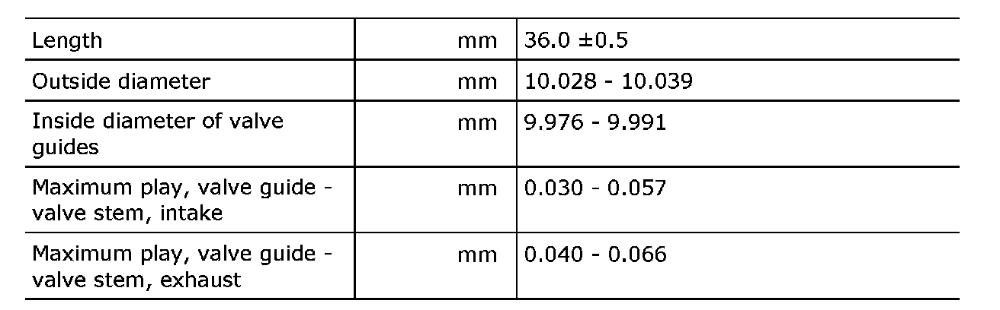
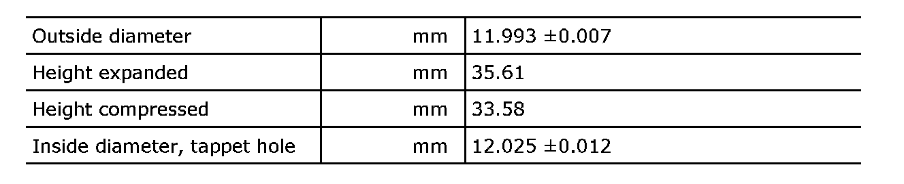
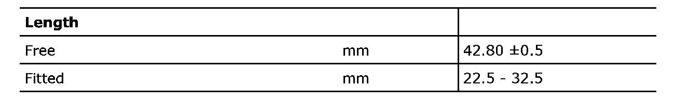

Valve Gear
Valve gear1. Inlet valves


2. Exhaust valves

Warning
The exhaust valves are filled with salt and must not be heated to glowing else there is a risk of explosion.

Valve guides

Play is measured with the valve disc 3mm from the seat.
Tappets

Valve springs
